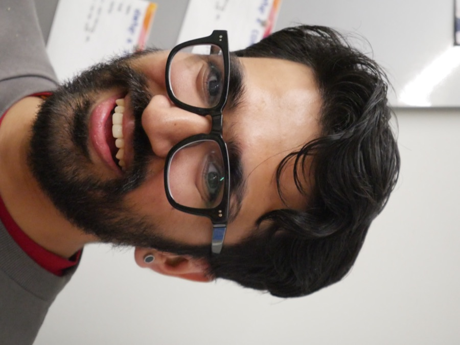

People
The lab, so far.
MOCHA Lab is brand new. Right now it's just the PI, with plenty of room to grow.

Principal Investigator
Dr. Saugat Pandey
Assistant Professor of Computer Science, Furman University
Recruiting students now
Saugat's research sits at the intersection of data visualization, perception, and AI: measuring how people read charts, how much they trust what they see, and how humans and AI systems can reason about visual data together.
He earned his PhD from Washington University in St. Louis at the VIBE Lab (Visual Interface and Behavior Exploration Lab), under the supervision of Dr. Alvitta Ottley. Most recently, he joined WSPA 7News to talk about consumer AI agents and the privacy questions they raise.
He also contributes to open source: in November 2026, two of his fixes were merged into CPython, the main implementation of Python.
- Visualization literacy
- Trust in visualization
- Human-AI teaming
- Vision-language models
- AI-generated image detection
- Accessibility
01Collaborators
Working together right now
Dr. Rachel Carroll
Northwell Health & University of North Carolina Wilmington
02Join
Pull up a chair.
The lab is new, so the first students and collaborators will help shape what it becomes.
Furman undergraduates
I'm actively recruiting undergraduate researchers interested in visualization, perception, human-AI interaction, AI/LLMs, and understanding how machines think. Email me with the subject line Interested in brewing together at MOCHA lab.
Collaborators
Working on visualization literacy, trust, aesthetics, human-AI teaming, or applications in accessibility, medicine, or environmental science? I'd love to hear from you.